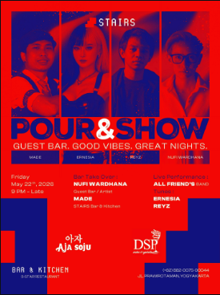
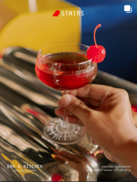
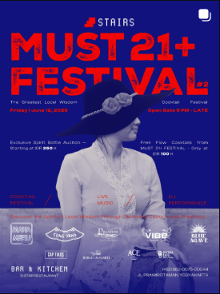
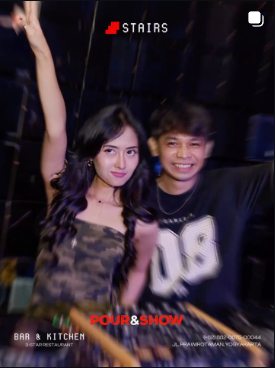
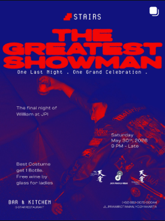
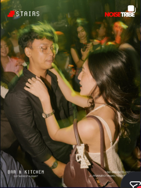
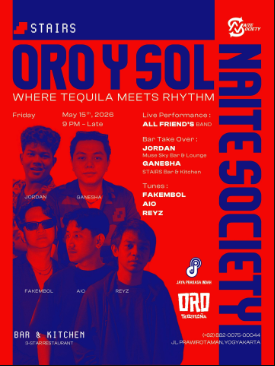
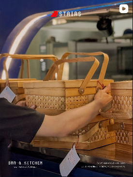
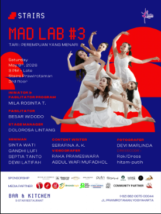
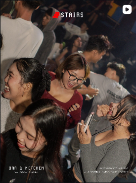

PRAWIROTAMAN · YOGYAKARTA · AFTER DARK
FOOD.
COCKTAILS.
LATE NIGHTS.
Global-inspired dining by day. A red-and-blue playground of cocktails, guest bars, music and late-night energy after dark.
DARK FOOD · COCKTAILS · DJ SETS










Not just dinner.
It turns up after dark.
STAIRS' public profile positions the venue around global-inspired food, cocktails and late nights. Recent social posts lean heavily into guest-bar takeovers, DJ-led nights, live performances and event culture.
Posters. People.
Pour & show.
Visual direction sampled from the current Instagram grid you shared: deep ultramarine, signal red, black, warm skin tones and flashes of amber.
Signature pours
for the late set.
Highlights from a publicly indexed STAIRS bar menu. Prices can change—use the official bar-menu link for the latest list.
THE POP
Bourbon · Amaretto · Espresso · Hazelnut · Banana · Coconut · Lime
110KLADIES TIME
Gin · Tequila · Hibiscus tea · Bubble gum · Kombucha · Dragon fruit · Tonic
115KTIRA-MISS-U
Vodka · Bailey's · Kahlua · Crème brûlée · Fresh milk
115KTIMOER KOE
Gin · Cinnamon · Lime · Albumin · Tonic
115KNANA NINA
Vodka lemongrass · Rum pandan · Lychee · Orange · Lime · Honey
110KRAIN & RUN
Vodka · Tequila · Elderflower · Mango · Orange · Lime
115KFrom brunch to late night.
Menu references are compiled from STAIRS' public menu listings. Prices may change.
Foto, harga, copy, dan kategori menu dapat diubah dari dashboard.
Menampilkan pilihan menu.
Concrete outside.
Electric inside.
Everything from
the official Linktree.
I’ve surfaced every Linktree destination as a website shortcut. Where the public crawler doesn’t expose the hidden destination, the button safely opens the official Linktree so the visitor lands on the correct live card.
Come for dinner.
Stay for the night.
ADDRESS
Jl. Prawirotaman, Brontokusuman, Mergangsan, Yogyakarta 55153
HOURS
Mon–Fri 11.00 — 01.00 · Sat–Sun 11.00 — 02.00
PHONE
+62 852-1565-5565